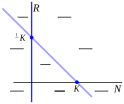
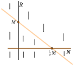
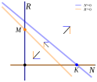
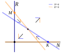
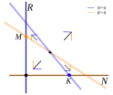
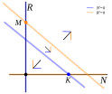
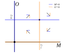

Section 4.5 Phase Plane Analysis with Nullclines, Competition and Predator-Prey Models
For a single autonomous differential equation \(X' = f(X)\text{,}\) solving the equation \(f(X) = 0\) allowed us to identify the equilibrium solutions. When we have an autonomous system of two differential equation,
\begin{align*}
X' \amp = f_1(X,Y),\\
Y' \amp = f_2(X,Y),
\end{align*}
solving a single equation like \(f_1(X,Y) = 0\) or \(f_2(X,Y) = 0\) is not quite finding an equilibrium. An equilibrium would require that both equations are satisfied for the same point. So what do we get when we think of an individual equation at a time?
In the \((x,y)\) phase plane, an equation of the form \(f(x,y) = 0\) generally describes a curve in the plane. In calculus, you would have learned about something called an implicit function. In a general sense, for each value of \(x\text{,}\) there can be zero, one, or more values of \(y\) that make the equation true. Near most such points, the solutions will follow some curve and the slope of that curve is calculated using the calculus strategy of implicit differentiation.
While we don’t need to focus heavily on the slope of the curve, we are interested in the idea that the equation describes a curve in the plane. Because the equation \(f_1(X,Y)=0\) represents points where \(X\) would have zero rate of change, the curve is called the \(X\)-nullcline. The curve satisfied by \(f_2(X,Y)=0\) is called the \(Y\)-nullcline. Any equilibrium solutions will correspond to the intersections of these two nullclines.
In this section, we will discuss how finding or describing the nullclines can simplify the visualization of the phase plane. We can use intersection points to find equilibria. Instead of finding a full vector field, we can identify direction at a single point in each region formed by the nullclines to see general directions of motion. Sometimes, if it is clear that either all directions point toward the equilibrium or at least one direction points away, this is enough to determine the stability of equilibrium values.
As our primary examples to motivate the analysis, we will discuss competition between two species. We will also return to the idea of predation and consider predator-prey models.
Subsection 4.5.1 Competition Models
The Rusty crayfish is an invasive aquatic crustacean in Virginia. (See
https://dwr.virginia.gov/wildlife/invasive-species/rusty-crayfish/.) Native in Ohio, Kentucky, Tennessee, and Indiana, this crayfish was first reported in Virginia in 2011. The species competes for resources with native crayfish but consume resources at a much higher rate. Thus, the Rusty crayfish risks displacing native species but also has the potential to disrupt the aquatic environment of other native species who share the water.Invasive species are often studied in the context of competition models. We want to consider two species that are found in the same environment and compete for similar resources, such as populations of native crayfish and Rusty crayfish. If there were only one species present, we could model that species with a logistic differential equation. What does the presence of a competitor do to the model?
If we imagined that a carrying capacity represents the available number of slots available for a species in the environment based on resource availability, then the presence of a competitor who uses some of those resources is effectively eliminating some of the available slots. From the perspective of per capita growth rates, we can imagine that the presence of a competitor has a negative effect on the species per capita rate.
Let \(N\) represent the population size of native crayfish and let \(R\) represent the population size of Rusty crayfish. Each population would have its own intrinsic per capita growth rates and carrying capacities for the given environment, say \(r_0\) and \(K\) for the native population, and \(q_0\) and \(M\) for the invasive population. The presence of competitors occupy some of the resources of the other species, so we can model our two populations using modified logistic growth models,
\begin{align*}
N' \amp = r_0 N(1 - \frac{N + \alpha R}{K}), \\
R' \amp = q_0 N(1 - \frac{R + \beta N}{M}).
\end{align*}
The parameter \(\alpha\) represents the (fractional) number of native crayfish that would have the same impact on growth rates of native crayfish as each Rusty crayfish has. Similarly, the parameter \(\beta\) represents the (fractional) number of Rusty crayfish that would have an equivalent impact on Rusty crawfish growth rates compared to the presence of each native crayfish.
Subsection 4.5.2 Nullcline Analysis
A nullcline is a curve defining a collection of points in the phase plane at which one of the state variables has an instantaneous rate of change equal to zero. We need to emphasize the idea of instantaneous because other variables are likely changing so that the solutions immediately move off of the nullcline.
For our competition model, the \(N\)-nullcline (where \(N\) has a zero rate of change) is characterized by points \((N,R)\) at which
\begin{equation*}
r_0 N(1 - \frac{N+\alpha R}{K}) = 0.
\end{equation*}
Similarly, the \(R\)-nullcline is characterized by points \((N,R)\) at which
\begin{equation*}
q_0 R(1 - \frac{R+\beta N}{M}) = 0.
\end{equation*}
Because each equation is already written in a factored form, each nullcline consists of two distinct curves. The \(N\)-nullcline consists of the line for which \(N=0\) as well as a second line for which \(N+\alpha R = K\text{.}\) The \(R\)-nullcline consists of the lines for which \(R=0\) or \(R+\beta N = M\text{.}\)
Just as we drew arrows on a phase line to see the direction of motion for a single state variable, we can use nullclines to decompose the phase plane into different regions where each state variable is increasing or decreasing. In the \((N,R)\) phase plane, the \(N\)-nullcline includes a vertical line \(N=0\) and another line \(N + \alpha R = K\) that has an \(N\)-intercept (\(R=0\)) at \(N=K\) and an \(R\) intercept at \(R = \frac{1}{\alpha}K\text{.}\) We check the sign of the rate formula \(r_0 N (1 - \frac{N+\alpha N}{K})\) to determine if \(N\) is increasing or decreasing. When \(N \gt 0\) is larger than the second line, we have \(N\) decreasing. When \(N \gt 0\) is smaller than the second line, we have \(N\) increasing. Having \(N \lt 0\) is not biological for populations, but mathematically, we would have a reversal of signs because of the factor \(r_0 N\) being negative.
We have a similar evaluation for the variable \(R\text{.}\) The \(R\) nullcline has a horizontal line \(R=0\) as well as a line with slope \(\beta\text{.}\) That second line has an \(N\)-intercept at \(N=\frac{1}{\beta}M\) and a \(R\)-intercept at \(R=M\text{.}\) Regions of where \(R\) is increasing or decreasing is analogous to that of \(N\text{.}\)
Both nullclines are visualized in Figure 4.5.1 along with directions of motion for \(N\) and \(R\text{.}\) The behaviors are shown in separate graphs because we still need to consider the relative position of the nullclines to each other.


In order to analyze the dynamics, we consider the ordering of the \(N\)- and \(R\)-intercepts. For \(N\)-intercepts, we either have \(K \lt \frac{1}{\beta} M\) or \(\frac{1}{\beta} M \lt K\text{.}\) (There is also an exceptional case where they are equal, but the analysis for this would distract from our basic understanding.) Similarly, the \(R\)-intercepts have two possible orderings. Considering all of the combinations, there are four basic orderings possible, shown in Figure 4.5.2.




In each region of Figure 4.5.2, we have included a single pair of direction arrows showing whether \(N\) and \(R\) are increasing or decreasing, with a composite direction formed by the addition of those vectors. Notice how the \(N\)-direction reverses when we cross the \(N\)-nullcline. This is analogous to ordinary functions changing sign when the variable passes through a root. (Caution: A function can in general have a root without changing sign, like a parabola touching the axis at a single point; the same could happen with nullclines.)
Points where the \(N\)-nullcline intersects the \(R\)-nullcline are equilibrium points. There are three equilibria that appear in every situation. The equilibrium \((N,R) = (0,0)\) corresponds to mutual extinction, where neither population is present. The equilibrium \((N,R) = (K,0)\) corresponds to the situation where the native crayfish are at their carrying capacity and there are no Rusty crayfish present. Conversely, the equilibrium \((N,R) = (0,M)\) corresponds to the situation where the Rusty crayfish are at their carrying capacity having completely wiped out the native population. There are two cases where the nullclines intersect in the region with \(N \gt 0\) and \(R \gt 0\text{.}\) It is possible to solve for the exact location of that point, but we will just call it \((N,R) = (N^*, R^*)\text{.}\)
The directions of the vectors help us to recognize which equilibria are stable and which are stable. If the direction arrows point toward an equilibrium in every region that surrounds the equilibrium, it must be stable. If there is at least one region for which it is clear that direction arrows point away from the equilibrium, it must be unstable. There can also be a case (not illustrated in this example) where it looks like direction arrows look like they would go around an equilibrium. In that case, we would require another analysis method (involving eigenvalues) to determine stability.
In all cases, the equilibrium \((N,R)=(0,0)\) is unstable. For points near the equilibrium but with \(N \gt 0\) and \(R \gt 0\text{,}\) we see that both \(N\) and \(R\) will increase, forcing solutions to move away from the equilibrium. Biologically, this means that an environment with no crayfish of either species for which we introduce new crayfish, those crayfish populations will (at least initially) grow.
Next, let us consider the equilibrium \((N,R) = (K,0)\text{.}\) In Figure 4.5.2, the top two cases and bottom two cases show different behaviors, based on the ordering of the \(N\)-intercepts. In the top cases, where \(N=K\) (the equilibrium) is greater than \(N=\frac{1}{\beta} M\) (the \(N\)-intercept of the \(R\)-nullcline), the regions around the equilibrium have all direction arrows pointing toward the equilibrium. Consequently, in these cases the equilibrium \((K,0)\) would be stable.
Biologically, the equilibrium \((K,0)\) represents the pre-invasion state of the ecosystem. The native population has reached its own carrying capacity and is at equilibrium. Stability means that when the new species is introduced with a few individuals, corresponding to moving to a point in the phase plane just above the equilibrium, the population will be driven back toward just one population. The invading species would disappear and the invasion attempt would be unsuccessful.
In the other two cases, where \(N=K\) is less than \(N=\frac{1}{\beta}M\text{,}\) the regions around the equilibrium show the \(N\) directions point toward the equilibrium but the \(R\) directions point away from the equilibrium. In these cases, the equilibrium \((K,0)\) is unstable. Biologically, this would mean that when a few Rusty crayfish enter a native population of crayfish at equilibrium, the Rusty crayfish population is able to grow, moving the system away from equilbrium. This would be a successful invasion.
The equilibrium \((N,R) = (0,M)\) will be essentially analogous to the previous discussion, except with the roles of \(N\) and \(R\) reversed. Biologically, this refers to an ecosystem that only contains the Rusty crayfish. In the context of the invasion, since we had to start with just the native population, this would conceptually be an equilibrium corresponding to a complete takeover by the invader. Being a stable equilibrium would mean that reintroducing a few native crayfish without eliminating the Rusty crayfish would have no impact.
There is a fourth equilibrium in the positive quadrant \((N,R) = (N^*,R^*)\) in two of the four cases shown in Figure 4.5.2. Notice that this extra equilibrium has stability that is opposite that of \((K,0)\) and \((0,M)\text{.}\) In the top-right case where \(K \gt \frac{1}{\beta}M\) and \(M \gt \frac{1}{\alpha}K\text{,}\) both of the single population equilibria are stable, but the interior equilibrium \((N^*,R^*)\) is unstable because solutions in the narrow wedges have directions moving away from the equilibrium. This case corresponds to a scenario in which a single population is resistant to invasion by the other, regardless of which population happened to have initially colonized the area.
In the bottom-left case, the two single population equilibria are both unstable, but the interior equilibrium is stable. This corresponds to a scenario where both types of crayfish are susceptbile to an invasion, but the invasion results in a stable equilibrium where both species coexist. This would typically only happen for two species that have weak competition, where the presence of one slows the other, but there are enough resources needs that do not overlap that both species can be self-sustaining in the presence of the other.
Subsection 4.5.3 The Predator-Prey Model
We previously considered a producer-consumer model between two species. We will revisit a simplified version of that model called the Lotka-Volterra Predator Prey model. We think of the producer species as any prey species, and the consumer species is the predator species. For example, we might consider a prey species as being field mice and the predator species as being owls.
The model will be simplified in that the prey species does not have logistic growth but is modeled with a constant per capita growth rate. If we let \(M\) represent the mouse population size and \(O\) represent the owl population size, then the Lotka-Volterra model would be written as the system of differential equations
\begin{align*}
M' \amp = r_M M - b M O, \\
O' \amp = -r_O O + c M O.
\end{align*}
Factoring the equations will make the nullclines more apparent, so we rewrite our model as
\begin{align*}
M' \amp = M(r_M - b O), \\
O' \amp = O(-r_O + c M).
\end{align*}
The \(M\) nullcline in the \((M,O)\) phase plane will be found from \(M=0\) or \(1 - \frac{b}{r_M}O = 0\text{,}\) corresponding to the vertical line \(M=0\) and the horizontal line \(O = \frac{r_M}{b}\text{.}\) Similarly, the \(O\) nullcline will consist of the horizontal line \(O=0\) and the vertical line \(M = \frac{r_O}{c}\text{.}\)
Directions for the rates of change in the positive quadrant can be characterized by looking at the sign of the rate formulas on either side of the nullclines.
For the mice \(M \gt 0\text{,}\) if \(O \gt \frac{r_{M}}{b}\) (many owls), the rate of change in the mouse population will be negative. Owls are eating mice faster than they are able to reproduce because there are so many owls. However, when \(O \lt \frac{r_{M}}{b}\text{,}\) the rate of reproduction now exceeds predation by owls and the mouse population is able to grow.
Similarly, for the owls, if \(M \gt \frac{r_{O}}{c}\) (many mice), the rate of change for the owl population will be positive. There is plenty of food for the owls and the owl population will be increasing. On the other hand, if \(M \lt \frac{r_{O}}{c}\) (few mice), the rate of change for the owl population will be negative and the owl population will decrease.
The phase plane with nullclines and directions of motion are illustrated in Figure 4.5.3. Notice that there are exactly two equilibria, where \((M,O)=(0,0)\) represents mutual extinction and \((M,O) = (\frac{r_O}{c}, \frac{r_M}{b})\) represents both species coexisting.

The vector field directions this time are only partly helpful in understanding stability. The equilibrium for extinction is clearly unstable based on directions of the vector field, since a small introduction of mice into the environment will result in mice growing exponentially. However, the vector field does not show clearly what happens for the coexisting equilibrium—the vector field seems to rotate around the equilibrium point, rather than flow in or out of it. We need deeper analysis than just the picture to determine what happens here.